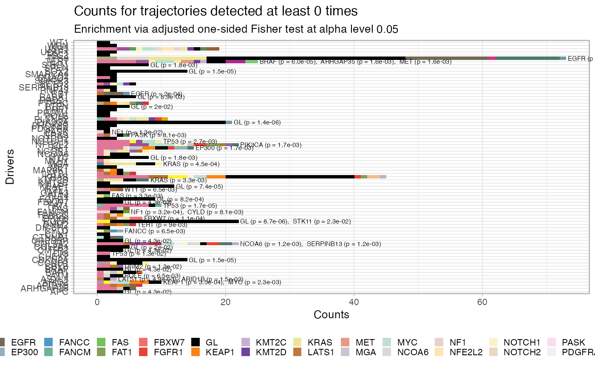
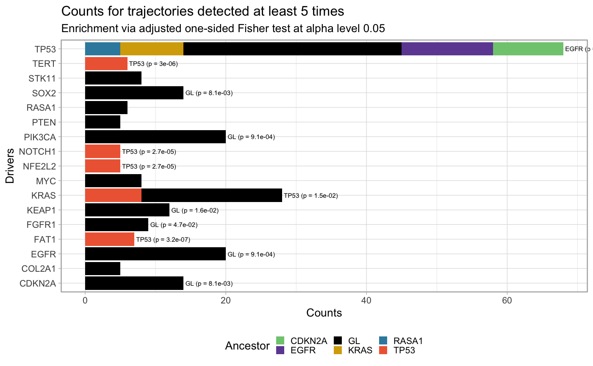
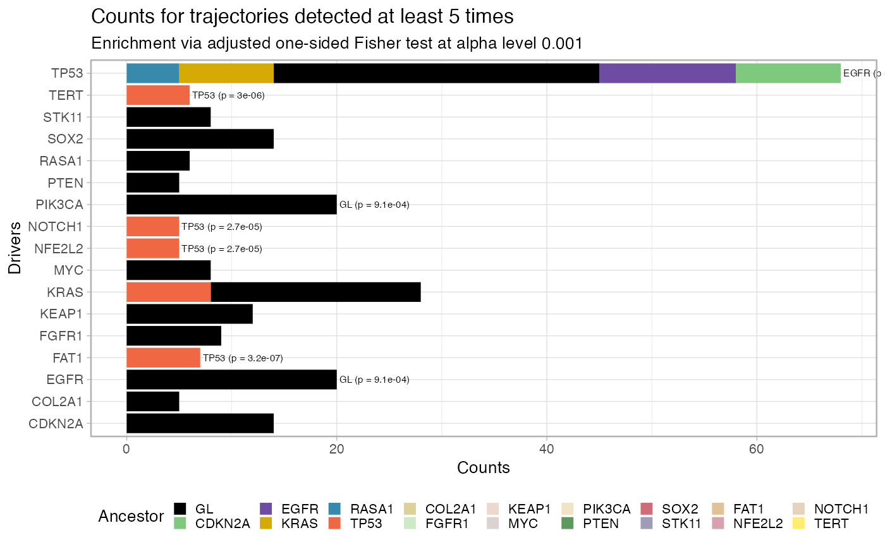

Plot the fit penalty as a barplot, for each one of a set of desired
driver events, where the bar represents the counts of each trajectory
in the data. This function allows also to filter out entries that have
been seen below a predetermined cutoff, and tests for significance in the
association A -> B via a one-sided Fisher 2x2 test adjusted for the number of
comparison (marginal count of B-ended trajectories). The tests are carried
out by function revolver:::enrichment_test_incoming_edge, which can
be used to obtain a tidy representation of the tests' results.
plot_penalty(x, drivers = x$variantIDs.driver, min.occurrences = 0, alpha_level = 0.05, drivers_palette = distinct_palette_many)
| x | A REVOLVER object with fits. |
|---|---|
| drivers | The list of drivers to use; by default all of them. If the
entry is a subset of the actual list of all drivers, all the entries in the
penalty data structure |
| min.occurrences | The penalty data structure will be filtered for
|
| alpha_level | The significance level for the enrichment Fisher test. |
| drivers_palette | A function that can return, for an input number, a number of colours. |
A ggplot object for this plot.
# Data released in the 'evoverse.datasets' data('TRACERx_NEJM_2017_REVOLVER', package = 'evoverse.datasets') plot_penalty(TRACERx_NEJM_2017_REVOLVER)#> #> =-=-=-=-=-=-=-=-=-=-=-=-=-=-=-=-=-=- #> Enrichment test for incoming edges #> =-=-=-=-=-=-=-=-=-=-=-=-=-=-=-=-=-=- #> # A tibble: 49 x 15 #> estimate p.value conf.low conf.high method alternative from to POS_POS #> <dbl> <dbl> <dbl> <dbl> <chr> <chr> <chr> <chr> <int> #> 1 23.0 1.82e-9 8.60 Inf Fishe… greater EGFR TP53 13 #> 2 25.4 1.36e-6 4.81 Inf Fishe… greater GL PIK3… 20 #> 3 10.5 6.27e-6 4.19 Inf Fishe… greater CDKN… TP53 10 #> 4 12.6 8.68e-6 3.56 Inf Fishe… greater GL EGFR 20 #> 5 Inf 1.48e-5 5.16 Inf Fishe… greater GL CDKN… 14 #> 6 Inf 1.48e-5 5.16 Inf Fishe… greater GL SOX2 14 #> 7 19.8 1.71e-5 5.37 Inf Fishe… greater TP53 FAT1 7 #> 8 Inf 2.10e-5 9.42 Inf Fishe… greater RASA1 TP53 5 #> 9 Inf 5.99e-5 14.5 Inf Fishe… greater BRAF TERT 3 #> 10 Inf 7.41e-5 4.31 Inf Fishe… greater GL KEAP1 12 #> # … with 39 more rows, and 6 more variables: POS_NEG <int>, NEG_POS <int>, #> # NEG_NEG <int>, alpha_level <dbl>, N <int>, psign <lgl>plot_penalty(TRACERx_NEJM_2017_REVOLVER, min.occurrences = 5)#> #> =-=-=-=-=-=-=-=-=-=-=-=-=-=-=-=-=-=- #> Enrichment test for incoming edges #> =-=-=-=-=-=-=-=-=-=-=-=-=-=-=-=-=-=- #> # A tibble: 15 x 15 #> estimate p.value conf.low conf.high method alternative from to POS_POS #> <dbl> <dbl> <dbl> <dbl> <chr> <chr> <chr> <chr> <int> #> 1 Inf 3.10e-8 11.5 Inf Fishe… greater EGFR TP53 13 #> 2 Inf 3.16e-7 15.0 Inf Fishe… greater TP53 FAT1 7 #> 3 Inf 2.01e-6 8.13 Inf Fishe… greater CDKN… TP53 10 #> 4 Inf 2.95e-6 11.9 Inf Fishe… greater TP53 TERT 6 #> 5 Inf 7.88e-6 7.08 Inf Fishe… greater KRAS TP53 9 #> 6 Inf 2.67e-5 9.10 Inf Fishe… greater TP53 NFE2… 5 #> 7 Inf 2.67e-5 9.10 Inf Fishe… greater TP53 NOTC… 5 #> 8 Inf 9.14e-4 2.67 Inf Fishe… greater GL EGFR 20 #> 9 Inf 9.14e-4 2.67 Inf Fishe… greater GL PIK3… 20 #> 10 Inf 1.64e-3 3.21 Inf Fishe… greater RASA1 TP53 5 #> 11 Inf 8.06e-3 1.75 Inf Fishe… greater GL CDKN… 14 #> 12 Inf 8.06e-3 1.75 Inf Fishe… greater GL SOX2 14 #> 13 3.26 1.52e-2 1.31 Inf Fishe… greater TP53 KRAS 8 #> 14 Inf 1.64e-2 1.45 Inf Fishe… greater GL KEAP1 12 #> 15 Inf 4.69e-2 1.03 Inf Fishe… greater GL FGFR1 9 #> # … with 6 more variables: POS_NEG <int>, NEG_POS <int>, NEG_NEG <int>, #> # alpha_level <dbl>, N <int>, psign <lgl>plot_penalty(TRACERx_NEJM_2017_REVOLVER, min.occurrences = 5, alpha_level = 0.001)#> #> =-=-=-=-=-=-=-=-=-=-=-=-=-=-=-=-=-=- #> Enrichment test for incoming edges #> =-=-=-=-=-=-=-=-=-=-=-=-=-=-=-=-=-=- #> # A tibble: 9 x 15 #> estimate p.value conf.low conf.high method alternative from to POS_POS #> <dbl> <dbl> <dbl> <dbl> <chr> <chr> <chr> <chr> <int> #> 1 Inf 3.10e-8 11.5 Inf Fishe… greater EGFR TP53 13 #> 2 Inf 3.16e-7 15.0 Inf Fishe… greater TP53 FAT1 7 #> 3 Inf 2.01e-6 8.13 Inf Fishe… greater CDKN… TP53 10 #> 4 Inf 2.95e-6 11.9 Inf Fishe… greater TP53 TERT 6 #> 5 Inf 7.88e-6 7.08 Inf Fishe… greater KRAS TP53 9 #> 6 Inf 2.67e-5 9.10 Inf Fishe… greater TP53 NFE2… 5 #> 7 Inf 2.67e-5 9.10 Inf Fishe… greater TP53 NOTC… 5 #> 8 Inf 9.14e-4 2.67 Inf Fishe… greater GL EGFR 20 #> 9 Inf 9.14e-4 2.67 Inf Fishe… greater GL PIK3… 20 #> # … with 6 more variables: POS_NEG <int>, NEG_POS <int>, NEG_NEG <int>, #> # alpha_level <dbl>, N <int>, psign <lgl>